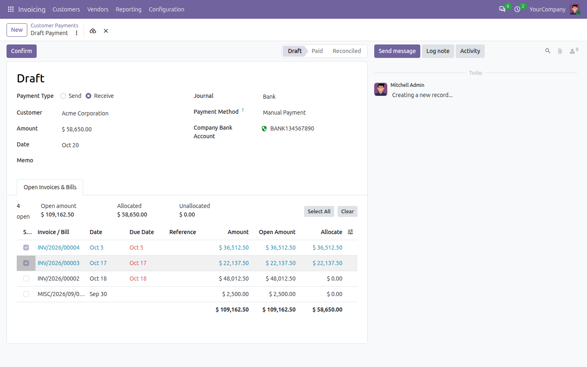
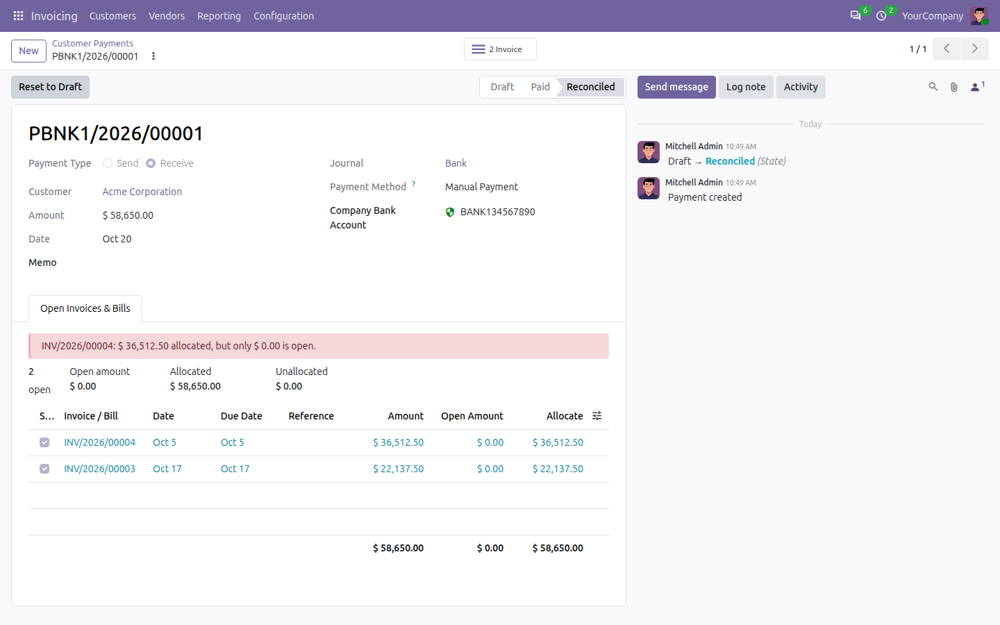

Start from the money. A customer payment or vendor payment lists the partner's open invoices or bills with their open amounts; tick what it pays, confirm, and the payment is reconciled with exactly those invoices.
On the formOpen items listed on the payment itself |
Open amountsWhat is still unpaid, live, per invoice |
Part paymentsAny amount on any invoice |
ReconciledOne journal item, matched to each invoice for its allocation |
THE OTHER DIRECTION
The Register Payment wizard needs you to find the invoices first. When a customer hands over an amount, or a vendor payment leaves the bank, the natural question is the other way round: which of this partner's open invoices does this money settle? This module answers it on the payment form.
|
☑
Tick what the money is forEvery open invoice or bill of the partner, oldest first, with date, due date (overdue in red), reference, amount and open amount. Tick an item and its whole open amount is allocated; lower it for a part payment. Instalments are separate items. |
⇄
The amount and the allocation agreeThe payment amount follows the allocations until you type one. Then ticking fills only what is left of it, lowering it trims the newest allocations, and what you do not allocate stays as an open credit on the partner's account - the form tells you. |
⚖
Clean accountingConfirming books one receivable or payable item per allocation, named after the invoice, and reconciles each with it - partial allocations give partial payments, the invoice's payment state follows. Reset to draft and confirm again whenever you like. |
|
Standard Odoo
❌ A payment typed in by hand is matched to invoices later, by hand, line by line. ❌ Nobody sees the partner's open invoices while recording the money. ❌ A part payment of two invoices means a reconciliation session. |
With Payment Allocation
✅ The open invoices are on the payment; tick, confirm, done. ✅ Select All, Clear and Refresh for the whole list; the figures above it always add up. ✅ An invoice paid elsewhere since the list was built, or an allocation above its open amount, is refused with a message naming it. ✅ Payments made by the wizard, the bank or any code are untouched. |


• Works for customer payments and vendor payments, invoices, bills, credit notes and refunds; items in another currency or on another receivable/payable account are not offered.
• Depends on Invoicing (account) only; Odoo 20 Community. Billing users allocate, read-only accountants see; multi-company safe.
• Plays with Ebshel's Payments for Multiple Vendors & Customers: a multi-partner payment is split by partner instead, and says so if items were ticked.
Payment Allocation to Invoices & Bills is built and supported by Ebshel Technologies.